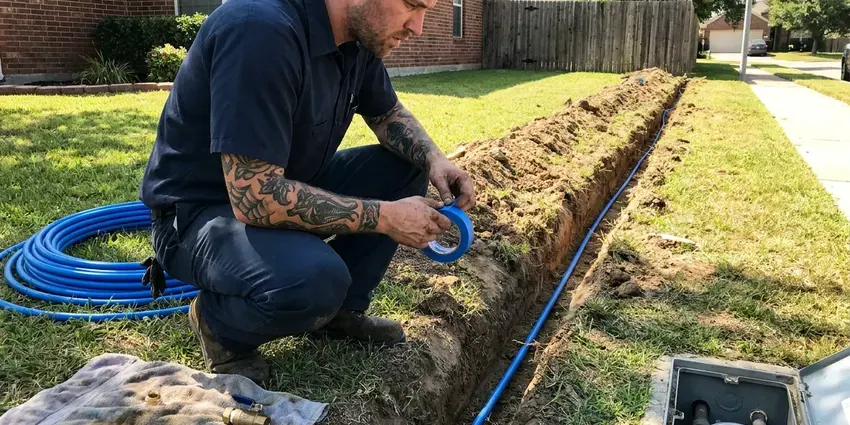
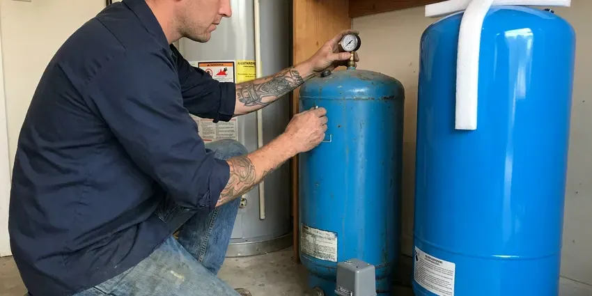

Sewer Replacement in Las Cruces, NM
Smaller holes, new pipe. GVK Plumbing offers trenchless sewer replacement across Las Cruces, NM.
- New Cleanout Installed
- Prompt Scheduling
- Insured Plumbers
- Permits and Inspections Covered

Need a New Sewer Line in Las Cruces, NM?
Let us know where the backup shows up first.
New Sewer Laterals for Las Cruces, NM Homes
GVK Plumbing handles sewer replacement across New Mexico for houses, duplexes and small commercial buildings. Pipe type matters. The pipe we remove is usually clay, cast iron or tar paper Orangeburg. Each fails in its own way, and the camera shows which kind of failure you have, which shapes the method and the price.
Our expertise includes:
- Two-way cleanout installs at the foundation
- Camera inspection with depth locating
- Tap connections to the municipal sewer

Additional Plumbing Replacement Services in Las Cruces, NM
When repairs are no longer enough, our replacement services in Las Cruces, NM deliver durable upgrades that restore full performance.




Las Cruces water line replacement specialists

Customers
Why Choose GVK Plumbing for Sewer Replacement in Las Cruces, NM?
Repair or replace is a real question. One bad joint does not always mean a new line. When the camera shows breaks every few feet, roots at most joints, or a belly holding water, the full line beats years of repairs. We tell you which it is.
- Known Ground, We know how the ground here acts in an open trench and where old laterals usually sit.
- Camera Verified, We camera the new line after install so you know it is clean and properly graded.
- Right Tools, Sonde locators, bursting heads and fusion machines for HDPE come with the crew.
Citywide Coverage
Wherever your house sits in Las Cruces, the job starts the same way, with a camera at the cleanout. If there is no cleanout, we install one. From there the footage and the locator tell us the route and depth, so the quote reflects your actual line. No guess pricing.
Experienced Team
The person who quotes your job is on the crew. GVK Plumbing plumbers are licensed and know sewer slope, cleanout and connection rules without checking a book, and they can explain each step as it happens. That saves time.
Safety-First Approach
811 gets called before any dig. Nothing gets dug until gas, power and cable are flagged. Near the paint we hand dig, because sewer laterals often cross gas service lines, and a strike on one is dangerous for the whole block. Slow near the marks.
Trusted Certified Las Cruces Plumbing Services Professionals
At GVK Plumbing, we are proud to offer certified plumbing services throughout Las Cruces, NM. Credentials matter in this trade. Our plumbers hold recognized industry credentials, and they follow strict safety and quality rules on every repair, installation and maintenance call we run.
Call Us Now PHCC Plumbing Contractor Recognition
PHCC Plumbing Contractor Recognition Better Business Bureau (BBB) Accreditation
Better Business Bureau (BBB) Accreditation Angi Certified Pro
Angi Certified Pro ISO 9001 Quality Management Certification
ISO 9001 Quality Management CertificationSewer Line Replacement Methods in Las Cruces, NM
Trenchless Sewer Replacement Options in Las Cruces, NM
Bursting and pulling replace the pipe. CIPP lining coats the inside of the existing pipe instead. We use bursting when the old line is broken or undersized, since it puts a new pipe in place instead of reinforcing the old, and lining when the pipe is still round and mostly intact. Each has its place.

Sewer Line Repair vs. Full Replacement in Las Cruces
We look at the whole line before recommending either. A single bad joint can usually be dug and fixed. Breaks every few feet, roots at every joint, or a belly that holds water for twenty feet tell us the line is failing everywhere, and in that case a full replacement saves you from paying to dig the same yard twice.
Traditional Sewer Line Replacement in Las Cruces
Digging is still the right method for a lot of lines. If the old pipe has caved in, trenchless has nothing to follow. Sharp bends, a belly that needs regrading, or a route that should change all point toward an open trench, and we restore the sod or gravel afterward. Grass grows back.
Commercial Sewer Replacement in Las Cruces
Bigger pipe, more flow, more rules. Commercial laterals usually start at 6 inches. We handle the permit, set up bypass pumping when the building cannot shut down, and coordinate traffic control if the tap sits in the street, keeping the outage as short as the job allows. Night shifts possible.
Commercial Sewer Line Replacement in Las Cruces
Commercial laterals are often 6-inch pipe and carry grease or heavier flows. There is often a grease trap or interceptor to work around. We schedule the work around your hours, set up temporary bypass pumping when the building needs to stay open, and work with the utility on the main connection. Weekend starts are common.
Code-Compliant Sewer Replacement in Las Cruces
Code sets the minimum slope, the cleanout spacing and the pipe type. The inspector looks at fall, cleanouts and material before backfill. We set fall at a quarter inch per foot unless the run requires otherwise, place cleanouts at the house and at major direction changes, and only bury pipe rated for it. Paperwork stays on file.
Trenchless Pipe Bursting in Las Cruces
Brittle pipe bursts cleanly. A hydraulic rig at the receiving pit pulls the bursting head through the old line, splitting it into the soil, while a continuous length of fused HDPE follows behind so the new pipe has no joints at all between the pits. Roots cannot get into a joint that does not exist.

Under-Slab Sewer Replacement in Las Cruces
Sewer pipe under a slab is the hardest kind to reach. We have two ways in. We can cut and remove a strip of floor inside the house and patch it after, or tunnel under the slab from outside so the floors stay intact, and the right choice depends on the length of the run, the flooring, and what sits above the pipe.
Local Sewer Replacement Near Me in Las Cruces, NM
Being close means fast camera work. Most camera inspections get scheduled in a day or two. GVK Plumbing serves Las Cruces and nearby towns with sewer inspection, replacement and cleanout installs, pricing every job off the actual video. No guess quotes.
Local plumbers know local sewer layouts. Some laterals run out the front, some out the back to an alley. That affects depth, length and which method fits, and in Las Cruces it is the kind of thing we usually know before we arrive. We still camera everything.
GVK Plumbing at a Glance
- Licensed and insured plumbers serving Las Cruces, NM
- 24/7 emergency service with same-day scheduling
- Clear written estimates, no hidden fees
- 4.8-star rated by 320+ New Mexico customers
Las Cruces Map
Las Cruces Information
- Population
- 114,892
- Area codes
- 575/505/575
- Service area
- Las Cruces and towns within a 40 mile drive
- Nearby
- Chaparral, Sunland Park, Deming, Alamogordo
Old cast iron, clay and Orangeburg pipe, plus roots and settling soil, are why so many sewer laterals in Las Cruces, NM need replacing.
Talk to a Plumber
Reach out to GVK Plumbing for honest, reliable plumbing from people who know the trade in Las Cruces, NM.
Our Specialized Plumbing Services in Las Cruces, NM
At GVK Plumbing, we handle the full list of plumbing services across Las Cruces, NM. We go from leak detection all the way to full system installations, for homes and commercial buildings, and we do it quickly at a fair price. Take a look at our core services below:


Our Sewer Replacement Steps in Las Cruces, NM
Here is how it works when we replace your sewer line.
Free Estimate
Call GVK Plumbing at (505) 581-4975. You get the camera video and a written price.
Choose the Method
We lay out the trench and bursting options for your lot. The footage decides it.
Prep the Site
Utilities get marked, the permit is pulled, and we lay mats to protect the lawn from equipment.
Frequently Asked Questions About Sewer Replacement in Las Cruces
The range is wide. Figure anywhere from $3,000 to $25,000 and up. Length and depth move the number most, followed by soil conditions, method, and whether concrete or a slab is in the way. We price it after the camera inspection, in writing.
We buy from major PVC makers like JM Eagle and Charlotte Pipe, and HDPE from established manufacturers that supply municipal sewer work. Fernco and other shielded couplings handle transitions. All of it meets ASTM standards for drain pipe.
Almost always, yes. The permit and inspection are part of our job. Most departments want to see the new pipe in the open trench, and we schedule digging around that. You get the signed permit at the end.
Most policies do not cover wear and tear. A sewer line rider may cover the pipe. Ask your agent before work starts, and we can send photos, camera footage, the old pipe material and an invoice for a claim.
Rarely. Glued PVC and fused HDPE joints give roots no opening.
Technically, maybe. It needs a permit, locates and correct slope.
Usually one to three days. Under-slab work takes longer.
Most take one to three days. A short trenchless burst can be finished in a single day, while a deep open trench or an under-slab job takes longer because of digging, waiting on the inspector before we close it, and restoration. Water use is limited during the tie-in.
What People Are Saying About Our Plumbing Experts?

Diane F.
My kitchen faucet had dripped for months and I finally got tired of hearing it at night. GVK Plumbing came out the next morning, replaced the cartridge and the O rings, and tightened a loose base that was letting water under the sink.
Faucet Repair · Alamogordo, NM
Carlos V.
Our house still had galvanized pipe, and upstairs the shower was a trickle. The crew repiped everything in PEX over three days and patched every drywall hole before they left. The pressure difference is night and day.
Repiping · Chaparral, NM
Laura S.
Our 40 gallon tank started leaking from the bottom after thirteen years. The tech hauled the old one out, set a new unit with a fresh expansion tank, and had hot water running in about four hours. He took the old tank with him too.
Water Heater Replacement · Carlsbad, NM
James P.
Our restaurant had a slow leak at the hand sink that was rotting the cabinet base. GVK Plumbing came in at six in the morning before prep, replaced the trap and both supply lines, and was packed up before my first cook clocked in.
Commercial Plumbing · Chaparral, NMPatricia H.
We had a slab leak that two other companies could not find. GVK Plumbing located it in under an hour with a listening device. They rerouted the line through the attic instead of breaking up the floor, so we kept our kitchen tile.
Slab Leak Repair · Chaparral, NMMarcus H.
Grease from the fryer line kept clogging the kitchen drain at my diner. GVK Plumbing hydro jetted the line after closing, showed me the buildup on camera, and set us up on a quarterly cleaning so it does not catch us on a Friday again.
Drain Cleaning · Alamogordo, NM